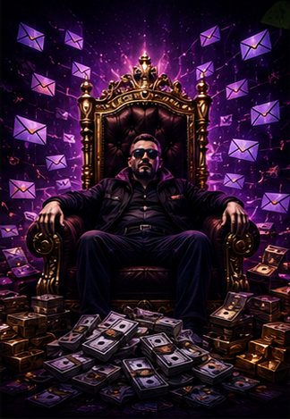
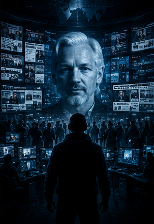
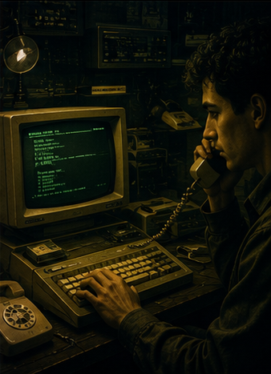
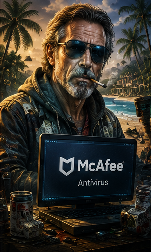

Podcasts
Step into the hidden world of cybercrime, hacking, and digital threats with the Digital Desperados Podcast by Infinite Protection . Each episode uncovers real stories from the dark side of the internet—designed to educate, inform, and prepare you for the risks of today's digital world.
From infamous hackers to modern cyber threats, our podcast turns complex cybersecurity topics into engaging, real-world stories.
Explore some of our most popular episodes from the Digital Desperados series.
This premier episode of the Digital Desperados Podcasts introduces a desperado indeed. Maksim Yakubets, known primarily as “Aqua” is a Ukranian-Russian hacker who has stolen and aided in stealing hundreds of millions of dollars.........
This episode highlights the story and crimes of Alexsey Belan, a Latvian hacker best known for Yahoo data breaches and for stealing the information (login, credit card, etc.) of millions. All at about only 19 years old!........
It seems that Alberto Gonzalez has always been a thrill seeker. From hacking into NASA at just 14 years old to eventually working as a government spy, Gonzalez seemed to have a love for getting into trouble. From his early hacking days,.......
In this podcast, you’ll hear the dark tale of Evgeny Mikhailovich Bogachev, also known as Slavik, a prolific Russian cybercriminal. Slavik's cybercrime journey began around 2010 when he created the Game Over Zeus (GOZ) botnet......
In this episode of the Digital Desperados Podcast, we explore the riveting tale of Mafia Boy, a child prodigy turned hacker extraordinaire. His early experiments with AOL trials led to a life in the shadows, culminating......
Welcome to the Digital Desperados Podcast, where we embark on an enthralling journey into the life of Gary McKinnon, also known as Solo, the NASA Hacker. Gary's story is nothing short of extraordinary - driven by .......
This episode’s featured dark tale revolves around Hector Xavier Monsegur, also known as Sabu, a prominent figure in hacking and hacktivism. Born in 1983 in Puerto Rico, Sabu's challenging upbringing led him to explore hacking from a young age........
This newest episode of the Digital Desperados Podcast recounts the chilling story of Max Butler, aka the Iceman, known for his cool demeanor and freezing victims' assets through credit card fraud. Butler's journey from teenage mischief to a hacking career unfolds as.......
In this lively episode of the Digital Desperados Podcast, hosts Jim Brangenberg and Patrick McMurphy, accompanied by SaferNet VPN's Brad Hawkins, unravel the thrilling world of state-sponsored hacking........
This Digital Desperados episode introduces Kevin Mitnick, known as The Condor, a legendary figure in the hacking world. Mitnick displayed social engineering skills from a very early age, initiating his hacking journey at 16.After unauthorized access to the Arc and subsequent........
n the riveting 11th episode of the Digital Desperadoes podcast, the gang dive deep into the captivating and tumultuous tale of Adrian Lamo, famously known as the Homeless Hacker. Lamo's journey unfolds from a tech-savvy enthusiast to a gray hat hacker, blurring the lines.......
In a whirlwind cybersecurity adventure, hosts Jim Brangenberg, Patrick McMurphy, and Brad Hawkins of SaferNet VPN unravel the intriguing history of the Syrian Electronic Army (SEA), a state-sponsored hacking group........
Welcome to the Digital Desperados podcast, sponsored by SaferNet VPN. (http://safernet.com) In this episode, we delve into the dark tale of Hamza Bendelladj, also known as BX1, the Smiling Hacker. The story unfolds as Hamza, a linguistic.......

In episode 14 of the Digital Desperados podcast, hosts Jim Brangenberg, Patrick McMurphy, and Brad Hawkins embark on a wild ride into the world of cybercrime with the intriguing tale of Pytor Levashov, aka the Spam Lord........
The Digital Desperados Podcast explores infamous cybercriminals and attacks with host Jim Brangenberg, story guide Patrick McMurphy, and SaferNet CEO Brad Hawkins. In this episode, they delve into the activities of Cozy Bear, a sophisticated state-sponsored hacking group........
Dmitry Dukachaev, aka Forb, lived a life stranger than fiction. Starting as a Robin Hood hacker providing free internet, he soon dove into the dark world of cybercrime. Forb's skills made him a sought-after hacker-for-hire........
This episode of Digital Desperados exposes Alexander Zhukov, aka "Nastra," the King of Fraud. Nastra wasn't your average hacker. He started young, hustling on the streets before moving on to online scams. In the 2010s, he created MethBot........
This week's Digital Desperados serves up a side of "accidental hacking" with Guccifer, the hacker who makes social media security questions look like a joke. This guy used Google and a thirst for fame to waltz into the accounts of the rich, famous........
This Digital Desperados episode explores Roman Seleznev, a hacker who amassed a fortune through stolen credit cards. Born in 1984, Roman's life took a dark turn after his parents divorced when he was young. Tragedy struck again at 17 with his mother's death, followed by his uncle........
Today on the Digital Desperados Podcast, the gang dive into the story of Ross Ulbricht, better known on the dark web as the Dread Pirate Roberts. Born in Austin, Texas, Ulbricht was a bright student and even an Eagle Scout who became obsessed with libertarianism during his college years.........
Imagine an attack that takes down the internet! Three teenagers in the US created Mirai to try to get established in the cybersecurity world, but it turned into a monster. Their tool infected millions of internet devices like cameras and routers........
In this episode of Digital Desperados, Jim Brangenberg, Patrick McMurphy, and Brad Hawkins (CEO of SaferNet VPN) begin to explore the fascinating and controversial life of Julian Assange. We look at the early life events that led Julian........

Welcome back to Part 2 in the Julian Assange story! This episode gets into the nitty gritty, discussing key WikiLeaks leaks, ranging from the Peruvian oil scandal to hundreds of thousands of classified war logs that the public was never........
xplore the story of Vladimir Drinkman, a notorious Russian hacker. This digital desperado gained expertise in SQL injections and formed a hacking crew that executed long-term cyber-attacks, including the massive........
In this episode of Digital Desperados, Jim Brangenberg, Patrick McMurphy, and Brad Hawkins explore the fascinating story of Pavel Durov, known as the "Mark Zuckerberg of Russia." Durov created VK, Russia's largest social........
In this episode of Digital Desperados, Patrick McMurphy dives into the incredible true story of Marcus Hutchins, founder of the MalwareTech Blog. Born in a quiet English village, Marcus’s passion for computers grew from a young age, leading him........
In this episode of Digital Desperados, Jim Brangenberg, Patrick McMurphy, and Brad Hawkins (CEO of SaferNet VPN) begin to explore the fascinating and controversial life of Julian Assange. We look at the early life events that led Julian........
In this episode of Digital Desperados, you’ll learn the story of Mustafa Al-Bassam, a teenage hacker who took on the CIA and lived to tell the tale. Co-hosts Patrick, Brad, and Jim dive into Mustafa's journey from mischievous school ........
Junaid Hussain, a quiet British teen with a knack for computers, morphed into a dangerous cyber jihadist. Initially drawn to hacking as a teenager, he joined groups like Team Poison, targeting perceived enemies of Islam. His skills grew........

Uncover the riveting story of Hieu Minh Ngo—aka “Hieu PC”—a notorious hacker who (thankfully) turned his life around to fight cybercrime. Hieu’s story begins in Vietnam, where he got his first computer at 13 and quickly found........
This week, Digital Desperados takes a lighthearted stroll through the story of Samy Kamkar, a hacker who quickly found out that hacking isn’t a game. Remember MySpace? (Yes, it’s the “classic rock” of social media.) Back in 2005, teenage Samy........
This week, Jim Brangenberg is joined by cybersecurity expert Patrick McMurphy and SaferNet CEO Brad Hawkins to unravel the dark web world of APT42—better known as Charming Kitten. Spoiler alert: it’s not actually charming........
Junaid Hussain, a quiet British teen with a knack for computers, morphed into a dangerous cyber jihadist. Initially drawn to hacking as a teenager, he joined groups like Team Poison, targeting perceived enemies of Islam. His skills grew........
Welcome to Digital Desperados, where we explore the dark tales of the web! In this episode, Jim Brangenberg and Patrick McMurphy take a deep dive into the rise and fall of Elizabeth Holmes, the ambitious founder of Theranos........
In this episode of Digital Desperados, the spotlight is on Ehud “Udi” Tenenbaum, a hacker whose story of genius and cybercrime shook the digital world. Udi’s tale begins in the late 1990s when his knack for uncovering software vulnerabilities........
In this episode of Digital Desperados, host Jim Brangenberg is joined by Patrick McMurphy and SaferNet CEO Brad Hawkins to uncover the chilling world of DarkSide, one of the most notorious ransomware groups........

In this fascinating episode of Digital Desperados, Patrick McMurphy takes us deep into the wild and chaotic life of John McAfee, the tech genius turned fugitive. Best known for creating McAfee Antivirus, John’s story is anything but ordinary........
In this episode of Digital Desperados, hosts Jim Brangenberg and Patrick McMurphy dive into the heroic story of Gary Alford, the IRS investigator who cracked the infamous Silk Road case.Unlike the usual criminals featured on the show,........
In this episode of Digital Desperados, dive into the cautionary tale of hacker-turned-ethical-hacker, Higinio Ochoa, aka w0rmer. What starts as harmless curiosity quickly escalates into full-blown cyber activism with CabinCr3w, an offshoot of Anonymous........
Billionaire investor Peter Thiel has been many things—PayPal co-founder, Silicon Valley kingmaker, libertarian mastermind, and more. In this episode, the Digital Desperados gang unravel the tangled web of Thiel’s career, from his early days in PayPal’s "Mafia"........
The Digital Desperados Podcast explores infamous cybercriminals and attacks with host Jim Brangenberg, story guide Patrick McMurphy, and SaferNet CEO Brad Hawkins. In this episode, we revisit as they delve into the activities of Cozy Bear, a sophisticated state-sponsored hacking group linked to........
Protect Your Devices Today
Take control of your digital safety today. Download Infinite Protection and experience powerful, simple cybersecurity built for modern users.